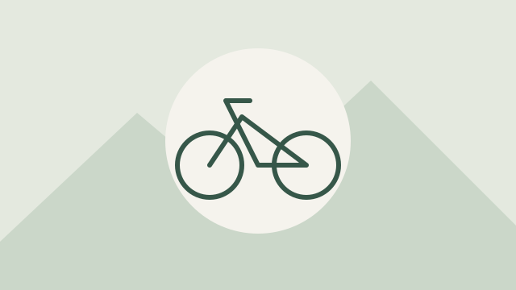
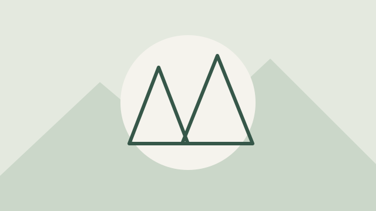
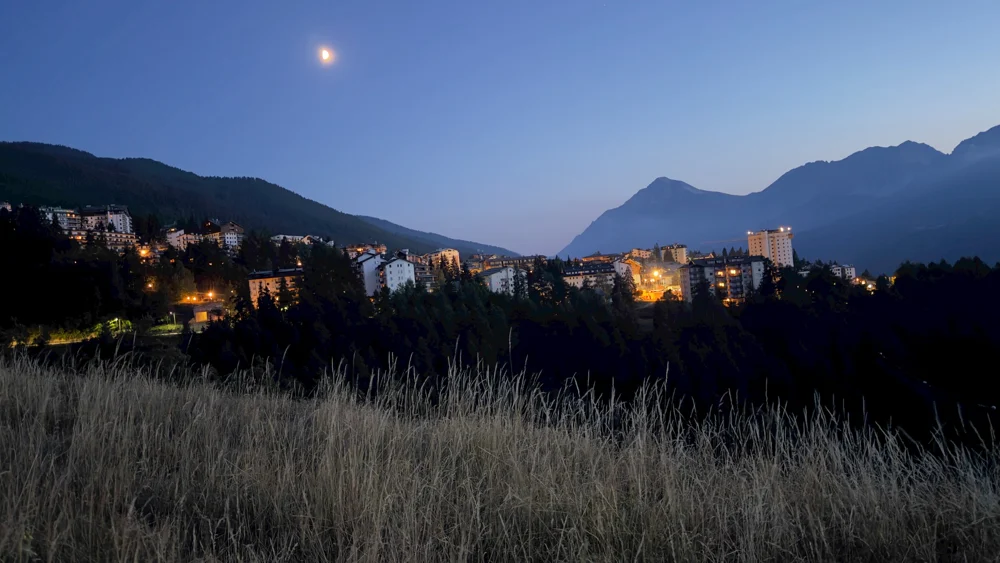
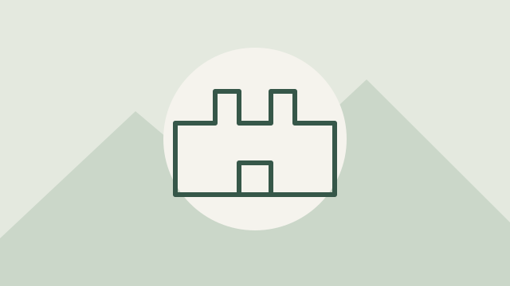

Winter
WinterEen perfecte skidag
Ski vanaf Jouvenceaux of Clotes (ca. 5–8 min rijden), lunch in Sportinia.
Informatie ↗Word wakker. Ontdek. Kom thuis. Bij regen of sneeuw geniet je van films, bordspellen, kruidenthee, Sonos-muziek en warm licht. Bij zon wacht een nieuw avontuur.
 Winter
WinterSki vanaf Jouvenceaux of Clotes (ca. 5–8 min rijden), lunch in Sportinia.
Informatie ↗ Winter
WinterWinterwandelingen, sleeën op toegestane plekken en sneeuwschoentochten met gids.
Informatie ↗
Zomer en sportBikepark, e-bikes en Assietta-route. Verhuur bij Faure Sport en 3Sixty.
Informatie ↗ Zomer en sport
Zomer en sportPin Court in Sauze en sportcentra in Sestriere en Bardonecchia.
Informatie ↗ Gezin
GezinZomerkampen, tennis en multisport: Pin Court, PlayOff en Snowmaxx. Vraag naar dagopvang en leeftijden.
Informatie ↗ Gezin
GezinAdventure Village, wandelingen, paintball en sneeuwactiviteiten; controleer leeftijdsgrenzen.
Informatie ↗OntspanningFilms op LG OLED, bordspellen, kruidenthee, koffie, Sonos en warm licht.
Informatie ↗ Ontspanning
OntspanningSpa en massages in Sauze en Durancia in Montgenèvre; vraag naar toegang.
Informatie ↗ Gastronomie
GastronomieCapanna Mollino, Capanna Kind, Chalet Capannina, Ciao Pais en Clot Bourget.
Informatie ↗
NatuurGran Bosco di Salbertrand: lariksen, wandelingen en respectvol dieren kijken.
Informatie ↗
NatuurBekijk de hemel vanaf een veilige plek of het balkon. Controleer bewolking en maanfase.
Informatie ↗
CultuurMontgenèvre en Briançon: Vauban-vestingwerken, wandelingen en gastronomie.
Informatie ↗ Cultuur
CultuurSestriere, Cesana, Claviere, Pragelato, Bardonecchia, Oulx, Usseaux en Valle Argentera.
Informatie ↗ Cultuur
CultuurCapanna Mollino, forten Exilles en Fenestrelle, alpine architectuur en olympisch erfgoed.
Informatie ↗ Zomer en sport
Zomer en sportAssietta, Colle delle Finestre en Mont Cenis per fiets of motor; controleer beperkingen.
Informatie ↗ Cultuur
CultuurZomerconcerten in Sportinia, muziek in berghutten en optredens in het dorp. Bekijk het programma.
Informatie ↗ Gastronomie
GastronomieMarkten, brood, kaas en streekproducten.
Informatie ↗WinterEen drankje na het skiën, op de berg of in het dorp. Controleer sluitingstijden en laatste lift.
Informatie ↗Seizoenstips: controleer officiële data.
Neem de trein naar Oulx en controleer bussen naar Sauze. Met de auto via de A32 of open grensroutes. Elektrisch laden op de overdekte parkeerplaats is inbegrepen voor gasten.
Treinen · Lokaal vervoer